Automatic solar street light control system
A street lighting prototype that runs entirely on stored solar energy and lights only the span a vehicle is actually travelling under — rather than burning the whole road all night.
The problem
Manually switched street lighting wastes energy in two distinct ways. It stays lit into the morning because nobody switches it off at first light, and it runs at full output through the small hours when the road is empty. Street lighting is one of the largest single line items in a municipal energy budget, so both failures are expensive and both are avoidable.
The design brief was to remove human intervention from the loop entirely, and to run the whole thing off photovoltaic generation so it does not draw from the grid at all.
Approach
Two sensing layers, working in series. A light-dependent resistor establishes whether it is day or night; below that threshold nothing happens regardless of traffic. Once it is dark, three infrared obstacle sensors spaced along the road determine which section of it is occupied, and only the lamps over that section come on.
Solar panels charge a 2-series lithium-ion pack through a battery management module during the day, and the pack runs the controller and lamps overnight. LEDs were chosen over high-intensity discharge lamps for the same reason the whole system exists: less energy for the same useful light, and a longer service life.
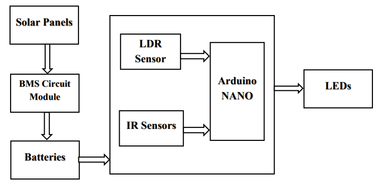
The part worth explaining
The interesting piece is not the day/night switching, which is trivial. It is how the controller decides whether a span of road is occupied without any position sensing.
Each IR sensor gets a counter that increments once per clean transition as something passes it — the state machine requires the sensor to go clear before it will count again, which debounces a single vehicle into a single count. The occupancy of the span between any two sensors is then simply the difference between their two counters, clamped at zero. When that difference is positive, something is inside the span and the lamp above it is driven; when it returns to zero, the lamp goes out.
This gives a lamp that switches on ahead of the vehicle reaching it and off behind it, using nothing but two counters and a subtraction.
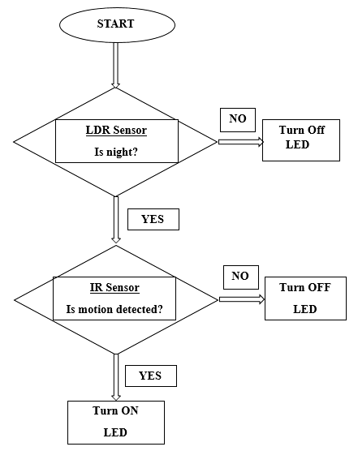
Bill of materials
| Component | Qty | Function |
|---|---|---|
| Solar cell | 3 | Photovoltaic generation |
| Li-ion cell | 2 | Overnight energy storage (2S pack) |
| BMS module | 1 | 2S protection board, 8 A continuous |
| Arduino Nano | 1 | Control logic |
| LDR sensor | 1 | Day / night discrimination |
| IR sensor | 3 | Vehicle detection along the span |
| LED | 2 | Roadway illumination |
Testing and results
The prototype was built as a one-way road section with three sensors and two lamps, and tested in both lighting conditions.
With light falling on the panels the lamps stayed off even with vehicles moving on the board, confirming the LDR gate holds priority over the motion layer. After dark, a vehicle passing the first sensor triggered detection without lighting the first lamp — correct, because it had not yet entered that span. The lamp came on as the vehicle moved underneath it, and when the vehicle passed the second sensor the second lamp lit and the first switched off in the same step. With two vehicles on the board in different spans, both lamps ran simultaneously.

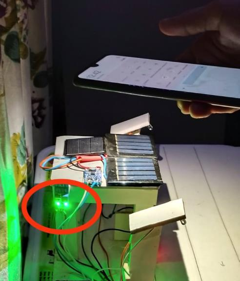
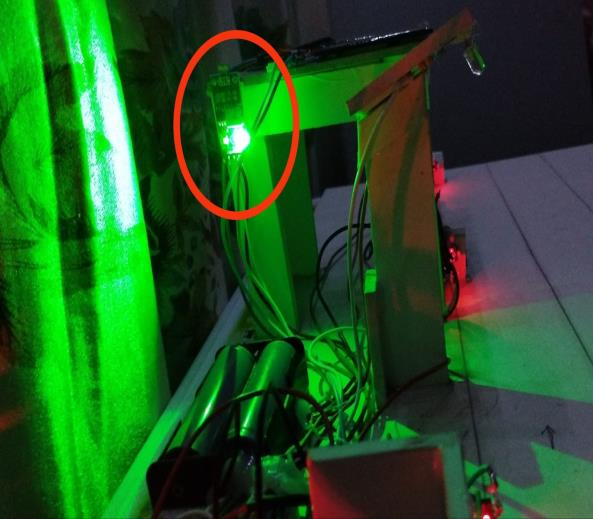
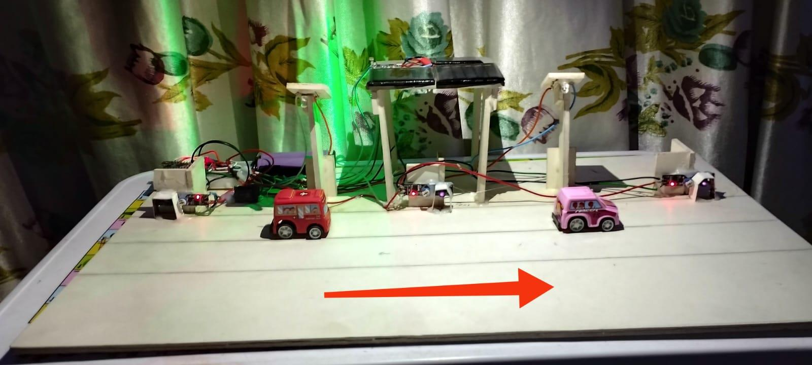
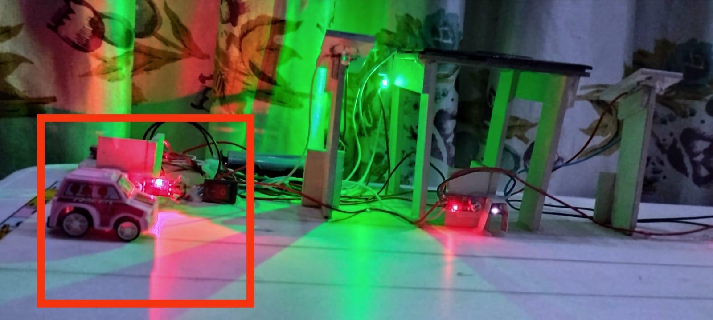
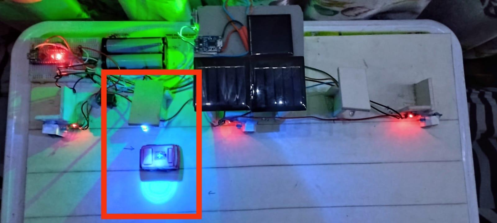
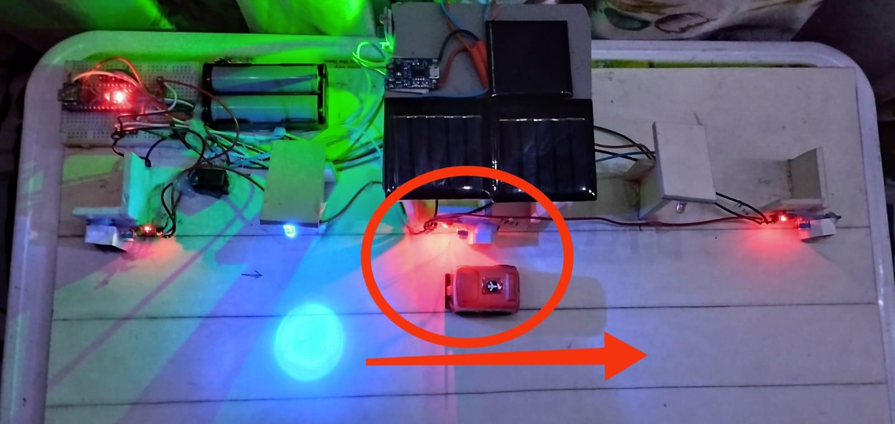
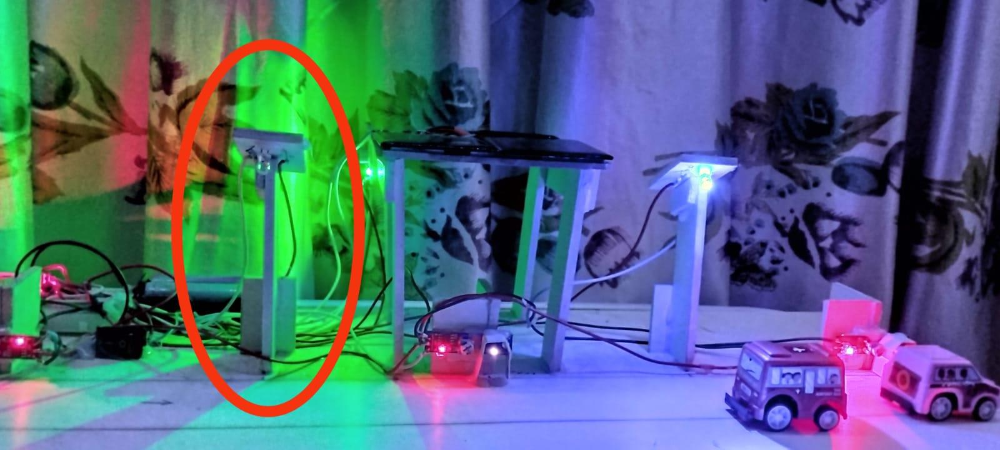
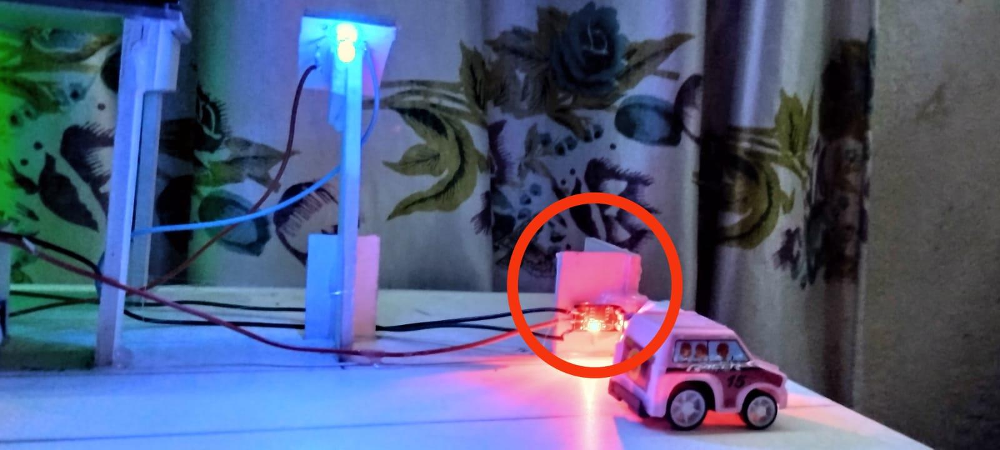
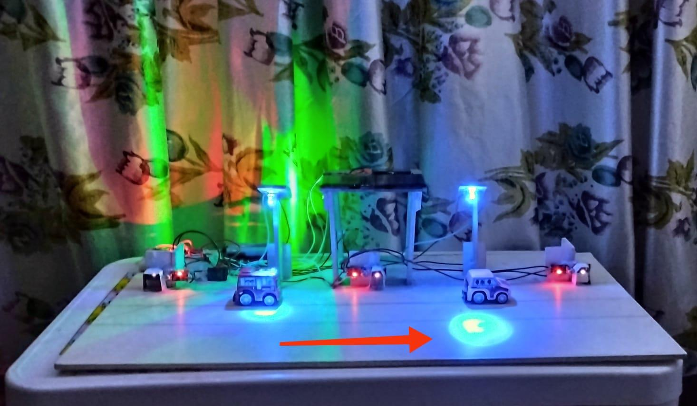
What I would do differently
The counter-difference scheme assumes traffic flows in one direction and that every vehicle triggers every sensor. A vehicle that reverses, or two vehicles passing a sensor near-simultaneously, will desynchronise the counters with no mechanism to recover. A production version needs either directional sensing or a periodic reset at a known-empty state. I would also add dimming rather than binary on/off, so an unoccupied span sits at low output instead of dark.